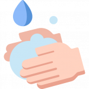
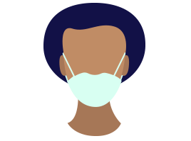
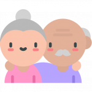

Lávese las manos a fondo y con frecuencia usando un desinfectante a base de alcohol o con agua y jabón.
Higiene de vías respiratorias
Evite tocarse los ojos, la nariz y la boca.
Mantener una buena higiene de las vías respiratorias. Eso significa
cubrirse la boca y la nariz con el codo doblado o con un pañuelo de
papel al toser o estornudar. El pañuelo usado debe desecharse de
inmediato.Usa mascarilla en caso de atender a alguien en quien se
sospeche la infección por el COVID-19.
Mantenga una distancia mínima de 1 metro (3 pies) entre usted y cualquier persona que tosa o estornude.
Síntomas
Si tienes fiebre, tos y dificultad para respirar, comunícate al 171 para evaluar tu estado. Si necesitas una cita, puedes agendar Citas en el Ministerio de Salud Pública.
Manténgase
informado sobre las últimas novedades en relación con la COVID-19. Siga
los consejos de su dispensador de atención de salud, de las autoridades
sanitarias pertinentes a nivel nacional y local o de su empleador sobre
la forma de protegerse a sí mismo y a los demás ante la COVID-19.
Adultos mayores
Se pide que las personas mayores de 60 años procuren quedarse en casa.
Canales oficiales
Informarse por canales oficiales.
Evita compartir rumores o noticias que no hayan sido confirmadas.
Se solicita respeto a la familia de los pacientes y de quienes forman parte del cerco epidemiológico.